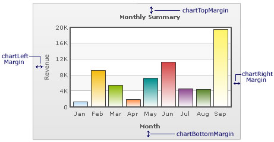
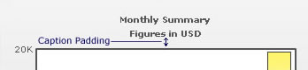

FusionCharts XT lets you define various paddings and margins. We will see them one-by-one.
Chart Margins
By default, FusionCharts XT provides some padding between the chart border and the canvas. This is called the chart margin and each of the margins - left, right, top, bottom chart can be set individually.
Chart Left Margin
Amount of empty space that you want to put on the left side of your chart is called chart left margin. Nothing is rendered in this space. The XML/JSON used to configure the same is:
<chart chartLeftMargin="15">
Chart Right Margin
Amount of empty space that you want to put on the right side of your chart.
<chart chartRightMargin="15">
Chart Top Margin
Amount of empty space that you want to put on the top of your chart.
<chart chartTopMargin="10">
Chart Bottom Margin
Amount of empty space that you want to put on the bottom of your chart.
<chart chartBottomMargin="10">
Caption Padding
This attribute lets you define the space between the caption of the chart and the top of the chart canvas. But when you have a sub-caption defined in the chart, it controls the space between the sub-caption and the top of the chart canvas.
Example:
<chart captionPadding="15">
X-Axis Name Padding
Using this, you can set the distance between the top of X-Axis title and the bottom of data labels (or canvas, if data labels are not shown).

Example:
<chart xAxisNamePadding="10">
Y-Axis Name Padding
The padding that you want to set between the Y-Axis name and values.

Example:
<chart yAxisNamePadding="10">
Y-Axis Values Padding
This allows you to set the padding between the left end of the chart canvas and the Y-Axis values.

Example:
<chart yAxisValuesPadding="5">
Label Padding
This attribute sets the vertical space between the canvas bottom edge and the data labels.
Example:
<chart labelPadding="3">
Value Padding
It controls the space between your columns/anchors and the value text boxes.
Example:
<chart valuePadding="3" >
Canvas Padding
For a line/area chart, the padding between the canvas border and the position where the line/area chart begins to draw is called canvas padding.
Example:
<chart canvasPadding="30">